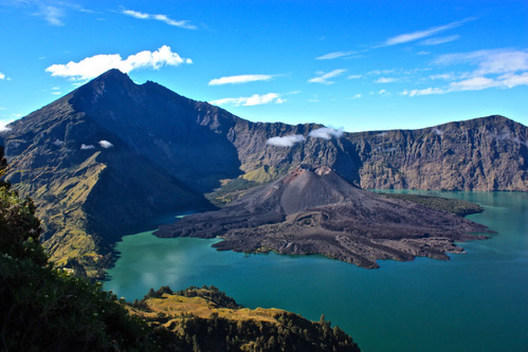
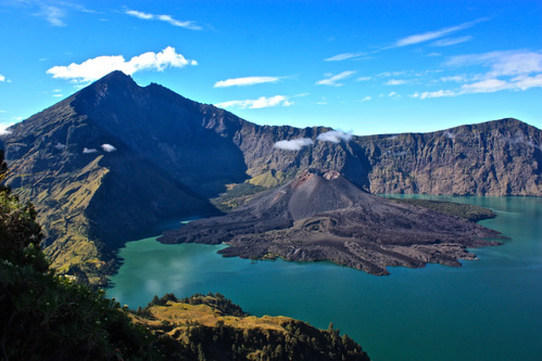

Tour Highlights
Mount Rinjani is a mountain located on Lombok Island, West Nusa Tenggara. This mountain, which is the second highest volcano in Indonesia with a height of 3,726 meters above sea level and is located at latitude 8º25' South Latitude and 116º28' East Longitude, is a favorite mountain for Indonesian climbers because of its beautiful views. This mountain is part of the Mount Rinjani National Park which has an area of around 41,330 ha and it is proposed to increase it to 76,000 ha to the west and east.
 

Tour Details
Tour Type : Adventure
Participants : 1-8 Persons
Price : Rp5.000
Rating : 5 Stars
Categories : Mountain & Nature
Beli Tiket